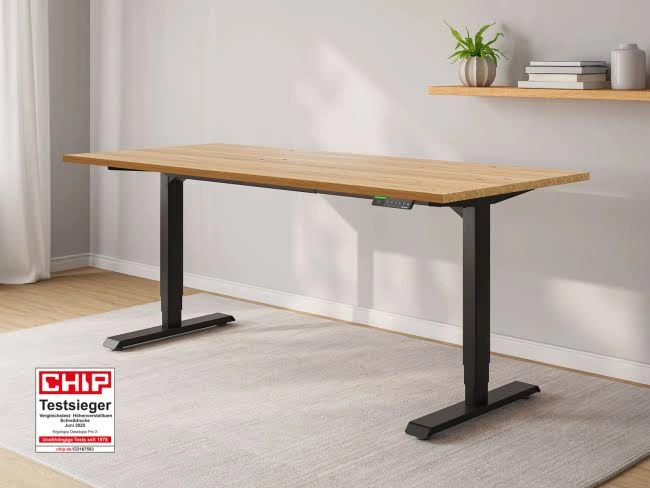

FW-C03 · 一体白桌板上的A3草图
评分：90/100，排名11，第二批。分项：{'product_30': 30, 'need_25': 23, 'reference_20': 14, 'difference_15': 14, 'feasibility_10': 9}。评分是测试潜力，不是效果预测。
产品：Economy Solid 白色 140×70 cm。
用户：设计、手写或经常用纸张思考的用户。
需求：键盘之外有平整连续的手写区域。
卖点：140×70一体桌板。
机会类型：二：已有卖点的视觉强化。
参考什么：借鉴高位桌面观察与无遮挡台面；一体板事实来自P2，不来自竞品。
为什么：官方明确Solid一体板，纸张和键鼠是现实桌面任务；职业规模为假设。
如何差异化：白色台面上用A3草图、直尺和键鼠分区；不生成木纹或拼接缝。
场景：带深灰软木公告板的设计工作角，背景只出现任务草稿。
构图：相机约55°俯拍，仍看到前长边、右侧控制器和部分桌脚；A3纸平放，不能遮住整个产品。
人物及动作：约28岁设计师一只手压住纸边，另一只手用普通铅笔标注；不在桌面直接涂画。
渠道：Meta Feed；Google PMax 图片资产。比例：1:1、4:5。德语主题：Eine durchgehende Fläche für deine Ideen。
资格依据：一体桌板；单电机；两组记忆高度；白桌白架；对应140×70在售变体。
不能添加的宣称：页面文案提到100–160 cm，但当前可选变体只核验100/120/140 cm；不把160 cm写成可售Solid。
证据边界：有A类实际图片参考；具体原创场景和转化效果尚待测试。图片参考体现视觉方法，不构成竞品效果数据。需求证据：P2+N2；书写任务适配为产品推断。
参考原图
 FLEX-GOOG-012
FLEX-GOOG-012FLEX-GOOG-012 · FlexiSpot · Google · 真实广告内的图像组件（非完整广告版式）
原广告来源。详情日期与德国地区已核验。

ERGO-GOOG-046ERGO-GOOG-046 · Ergotopia · Google · 真实广告内的图像组件（非完整广告版式）
原广告来源。德国日期筛选列表已核验；单条首次/最后日期未读取。